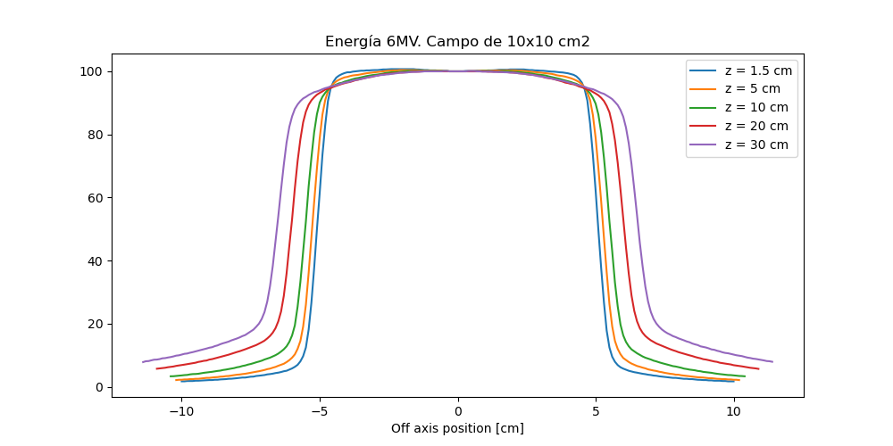

Commissioning, caracterización de haces terapéuticos
Física de la radioterapia. Máster de Física Biomédica
Comisionado, commissioning
Conjunto de procedimientos mediante los que se determina cómo varía la dosis del acelerador en función de las variaciones en la geometría de irradiación.
Particularidad del comisionado
La caracterización es particular para cada acelerador1, modalidad de radiación y energía.
- Está formado por los datos necesarios para:
- La configuración del programa de planificación dosimétrica en el que se realizan los cálculos detallados de las distribuciones de dosis en los pacientes.
- La verificación dosimétrica y el control de calidad de los cálculos de dosis realizados en el planificador.
- Mantener y establecer el estado de referencia del acelerador que sirve como control de las variaciones (averías , reparaciones, sustituciones) que se pueden producir a lo largo de su vida útil.
Secuencia temporal
El comisionado se realiza después de las pruebas de aceptación y antes de la entrada en funcionamiento del acelerador con pacientes.
Naturaleza del comisionado
Las medidas que se realizan durante el comisionado son de todas relativas, es decir, están referidas a un punto de normalización que a su vez se puede relacionar con el punto en el que se especifica la calibración absoluta.
Instrumentación

Cuba de agua
- Maniquí de forma cúbica o cilíndrica que puede ser llenado con agua.
- Sus dimensiones van desde 25x25x25 cm\({}^3\) hasta 75x75x75 cm\({}^3\) aprox.
- Dotado con un sistema de holders para la colocación precisa de los detectores.
- Permite alinear y desplazar los detectores con precisión submilimétrica.
- Un software de control y lectura coloca el detector en las posiciones y tiempos programados durante la irradiación a la vez que recoge y procesa las lecturas del detector generando curvas de dosis relativa.
- Al menos dos canales de lectura para poder realizar medidas con detector de referencia relativa.
Detectores
Cámaras de ionización cilíndricas y planas, detectores de diamante, detectores de estado sólido
Arrays de detectores
- Sistemas de medida compuestos por una combinación de varios detectores de pequeño volumen en posiciones fijas y con la electrónica de recolección integrada.
- Pueden medir dentro de un maniquí formado por planchas de agua plástica o en el seno de un maniquí cilíndrico motorizado que los mantiene orientados respecto al gantry para que sus detectores están en un plano perpendicular al eje del haz de radiación. Para ello utilizan un sensor colocado sobre el gantry que detecta la posición de este. Otros diseños emplean anclajes al gantry para mantener la orientación del array.
Otros dosímetros integradores
- Dosímetros que permiten integrar y medir distribuciones espaciales de dosis.
- Película radiocrómica
- Flat panel del acelerador
Parámetros medidos
Dependencia con la profundidad
Rendimiento en profundidad (PDD, percentage depth dose)
\[ PDD(z, A, f) = \frac{D(z, A, f)}{D(z_{\text{max}}, A, f)}100 \]
Medidas realizadas manteniendo constante la distancia fuente superficie \(DFS\) y modificando la profundidad \(z\) a la que se sitúa el detector. El detector barre desde la superficie hasta una profundidad con relevancia clínica, del orden de 25-30 cm.
Parámetros de los que depende el PDD
El PDD depende de la energía \(E\), tamaño de campo \(A\), \(DFS\) y \(z\).
Características del PDD en haces de fotones
- Hay una zona inicial donde la dosis crece (zona de acumulación de dosis o build-up), es la región en la que aún no se ha establecido el equilibrio electrónico.
- Esta región no se suele utilizar para el tratamiento pero aporta la ventaja de disminuir la dosis en piel.
- La profundidad del máximo depende de la energía de la radiación (por ejemplo para \({}^{60}\)Co \(z_{\text{max}}\) = 0.5 cm, para 6 MV \(z_{\text{max}}\) = 1.5 cm, para 18 MV \(z_{\text{max}}\)= 3 cm).
- Más allá del máximo la dosis decrece de forma aproximadamente exponencial, con un exponente igual al producto de la profundidad por un coeficiente lineal de atenuación del agua efectivo1: \[ PDD(z) \approx 100 \cdot e^{-\mu\,(z-z_{\text{max}})} \]
Dependencia con el tamaño de campo
A mayor tamaño de campo menor atenuación con la profundidad por el aumento de la contribución de la radiación dispersa.
A mayor tamaño de campo menor profundidad del máximo de dosis, antes se alcanza el equilibrio electrónico, porque hay una mayor contribución de radiación de menor energía dispersada desde los elementos del cabezal y mayor es también la contaminación electrónica.
Dependencia con la energía \(E\)
A mayor energía menor atenuación con la profundidad por la reducción del coeficiente de atenuación (menor probabilidad de interacción).
A mayor energía mayor profundidad del máximo de dosis porque el rango de las electrones secundarios es menor.
La ganancia de rendimiento en profundidad con la energía tiende a saturarse. Actualmente es raro encontrar aceleradores con energías por encima de los 15 MV.
Dependencia con la presencia del filtro aplanador
Para el mismo potencial de aceleración los haces con filtro tienen mayor rendimiento en profundidad porque el filtro endurece el haz (mayor energía media espectral).
La menor energía espectral del haz sin filtro supone una mayor probabilidad de interacción en la superficie y en profundidades pequeñas, y también mayor producción de electrones secundarios con rangos pequeños, por lo que la dosis en la región de build-up es mayor. En términos prácticos la profundidad del máximo de dosis varía poco para un mismo potencial de aceleración.
Estimación de la contribución de dosis dispersa al PDD
La dosis dispersa para un campo de tamaño A se puede estimar como la diferencia entre el PDD para ese campo y el PDD para el campo de tamaño 0 (obtenido por extrapolación)
\[ PDD_{\text{radiación dispersa}}(A, z) = PDD(A, z) - \lim_{A \to 0} PDD(A, z) \]
Dependencia del PDD con la distancia
En ausencia de atenuación, la dosis disminuye de forma inversa al cuadrado de la distancia a la fuente. Podemos expresar, para el PDD medido a una distancia \(f\) desde la fuente hasta la superficie del agua:
\[ PDD(z,f) = 100 \cdot \left(\frac{f+z_{\text{max}}}{f+z}\right)^2 e^{-\mu(z-z_{\text{max}})} K_d \]
donde \(K_d\) es un factor que toma en cuenta la radiación dispersa. Suponiendo que \(K_d\) no depende de \(f\):
\[ PDD(z,f_1) = 100 \cdot \left(\frac{f_1 +z_{\text{max}}}{f_1 +z}\right)^2 e^{-\mu(z-z_{\text{max}})} K_d \]
\[ PDD(z,f_1) = PDD(z,f) \cdot F \]
siendo
\[ F = \left(\frac{f_1 +z_{\text{max}}}{f +z_{\text{max}}}\right)^2 \cdot \left(\frac{f+z}{f_1 +z}\right)^2 \] A \(F\) se le llama el Factor de Mayneord.
Aproximaciones para campos no cuadrados
De forma empírica se observa que el \(PDD\) de un campo rectangular de dimensiones \((a, b)\) es igual al del campo cuadrado de lado \(l\) que tiene la misma relación área/perímetro:
\[ l = 2\,\frac{a\cdot b}{a+b} \]
Análogamente, el \(PDD\) de un campo circular de radio \(r\) es igual al de un campo cuadrado con la misma área:
\[ l = r \sqrt{\pi} \]
Limitaciones del PDD para los tratamientos actuales.
- Al realizar un tratamiento, si queremos que el \(PDD\) sea directamente relevante tendremos que hacer que la distancia de la fuente a la superficie del paciente sea igual a la distancia a la que hemos realizado nuestras medidas de \(PDD\).
- En los tratamientos actuales, en los que el acelerador gira alrededor del paciente, este planteamiento obligaría a mover la mesa de tratamiento en cada ángulo de incidencia.
Relevancia actual del PDD
Las curvas de PDD son fáciles de medir bajo condiciones concretas y bien definidas. Son por tanto relevantes para realizar el comisionado. Sin embargo no son en general directamente aplicables para realizar cálculos dosimétricos en los tratamientos actuales.
Relevancia histórica del PDD
Mientras los cálculos dosimétricos se tenían que hacer a mano, los parámetros de tratamiento se tenían que introducir manualmente y la colimación en los tratamientos más complejos consistía en la colocación de bloques estáticos, recolocar al paciente en cada campo no era una limitación importante para el tratamiento. En este esquema, realizar cada campo con una distancia fuente superficie fija no dificultaba el tratamiento sino que facilitaba la realización manual de la dosimetría.
En la actualidad este planteamiento no es útil y el PDD se utiliza como entrada a otras formas más operativas de modelizar la dependencia con la profundidad de la dosis.
Dependencia con la profundidad manteniendo la distancia fuente detector constante
Relación tejido aire (TAR, tissue air ratio)
\[ TAR(z, A) = \frac{D(z, A, f)}{D_{\text{aire}}(z=0, A, f)} \]
Dosis en un punto situado a un profundidad z en un medio (agua o tejido) dividida por la dosis en ese mismo punto en ausencia de tejido, para el mismo tamaño de campo y distancia.
Parámetros de los que depende el TAR
El TAR depende de la energía \(E\), tamaño de campo \(A\) y \(z\).
Información incorporada en el TAR
Atenuación del haz primario y contribución por dispersa. Es independiente de la distancia desde el detector al foco \(f\).
Relevancia del TAR
- Incorpora información relevante sobre la dependencia en profundidad de la dosis y de la contribución de la dosis dispersa introducida por la presencia del medio en tratamientos isocéntricos.1
- Es una forma natural de introducir medidas relativas de dependencia con la profundidad directamente relacionables con las condiciones de referencia de calibración, si el protocolo de calibración se basa en estándares de medida de dosis en aire.
- Es una magnitud relevante en algunos algoritmos de cálculo de dosis.
- Es una magnitud bien definida en haces de \({}^{60}\)Co.
Problema de la definición del TAR
La dosis en aire en ocasiones puede considerarse mal definida y sometida a incertidumbres. Para las energías de los haces que se utilizan en la actualidad las caperuzas de equilibrio convencionales no aseguran el equilibrio electrónico ni descartan la influencia de la contaminación electrónica proveniente del cabezal del acelerador.
Alternativa a la definición del TAR
Se necesita definir una magnitud con los mismos fundamentos pero basada en las condiciones de medida de los protocolos para la determinación de la dosis en agua y evitar las dificultades introducidas por la medida en aire.
Relación tejido maniquí (TPR, tissue phantom ratio)
\[ TPR(z, A) = \frac{D(z, A, f)}{D}(z_{\text{ref}}, A, f) \]
Dosis en un punto situado a un profundidad z en un medio (agua o tejido) dividida por la dosis en ese mismo punto a una profundidad de referencia.
Si \(z_{\text{ref}} = z_{\text{max}}\) se denomina \(TMR\)
Parámetros de los que depende el TAR
El TPR depende de la energía \(E\), tamaño de campo \(A\) y \(z\).
Información incorporada en el TAR
Atenuación del haz primario y contribución por dispersa. Es independiente de la distancia desde el detector al foco \(f\).
- La dependencia del TPR y del TMR con el tamaño de campo es similar a la del PDD: para una profundidad dada (más allá del máximo de dosis) el TPR aumenta al aumentar el tamaño de campo
Determinación experimental del \(TPR\)
- Para poder medir el TPR es necesario mantener el detector fijo y cambiar la profundidad de agua a la que se encuentra, añadiendo o quitando agua. Esto es más difícil que mantener la cantidad de agua fija y mover el detector
- Es difícil medir la profundidad instantánea cuando el nivel del agua cambia.
- A menudo se mide el PDD y se emplea la relación teórica entre ambos para calcular el TMR
Sistemas de medida del \(TPR\)
Algunas cubas de agua incorporan sistemas de medida del TPR, en los que se mide el nivel de agua mediante una boya. La cantidad de agua se modifica bombeando agua desde un depósito. Estos sistemas tiene la limitación del rizado que se produce en la superficie del agua y en general los resultados de estas medidas directas son ruidosos y requieren de algún postprocesado.
\(TPR\) y caracterización de la energía del haz
Para caracterizar el espectro de energía (calidad) del haz se utiliza el cociente entre los \(TPR\)s a 20 cm y a 10 cm:
\[ TPR_{20/10} = \frac{D(z=20 \, \text{cm}, \, c_{\text{ref}})}{D(z=10 \, \text{cm}, \, c_{\text{ref}})} \]
- Dos haces de idéntica calidad \(TPR_{20/10}\) tendrán el mismo \(TPR\) para \(z > z_{\text{max}}\), pero para \(z < z_{\text{max}}\) el TPR dependerá en general de la contaminación electrónica y variará en cada acelerador.
Importancia del \(TPR_{20/10}\)
El \(TPR_{20/10}\) es el parámetro de entrada en los protocolos de medida para determinar los factores de corrección de las cámaras de ionización.
Dependencia con la posición en planos perpendiculares al eje del haz
Perfil de dosis, \(OAR\) Off-Axis Ratio
\[ OAR(x,y,z) = \frac{D(x,y,z)}{D(0,0,z)} \]
Factores de los que depende el \(OAR\)
- La energía del haz
- El tamaño de campo
- La profundidad
- La distancia fuente-superficie
Simetría del \(OAR\)
- Normalmente se considera suficientes con caracterizar los perfiles de dosis en dos direcciones ortogonales.
- Se suelen definir las direcciones in-plane paralela a la dirección gun-target y cross-plane perpendicular a la dirección gun-target.
- Durante el comisionado también se suele medir un perfil de dosis en la dirección diagonal de las dos anteriores para el tamaño de campo máximo disponible, para caracterizar el tamaño del filtro primario.
\(OAR\) en haces con filtro
Dependencia con el tamaño de campo
Definición del tamaño de campo
Distancia entre los puntos cuya dosis es igual al 50% de la dosis en el eje central.
Ajuste del tamaño de campo
La posición nominal de las mordazas del acelerador (la que aparece en la consola de control) se ajusta para que coincida con el tamaño de campo medido en el plano del isocentro.
Dependencia con profundidad
Perfiles relativos al valor de la dosis en el eje para cada profundidad. Se observa el aumento de tamaño con la distancia, una degradación del borde del perfil y un aumento de radiación dispersa.
Obsérvese también que el diseño del filtro aplanador optimiza la forma del perfil a una profundidad.
Definiciones relevantes para caracterizar los perfiles de dosis
Penumbra
Distancia entre los puntos cuyas dosis son el 80% y el 20% de la dosis en el eje central.
Planitud, flatness
Variación máxima de la dosis en la región central del haz (la región central se define normalmente como el 80% del tamaño de campo).
Simetría
Máxima diferencia de dosis entre la parte derecha y la parte izquierda del OAR.
Tolerancias
Los protocolos internacionales de calidad en radioterapia recomiendan valores mínimos que deben verificar estos parámetros.
Control sobre la planitud y la simetría
- La forma del \(OAR\) es muy sensible a la focalización del haz acelerado de electrones sobre el blanco (de fotones o electrones).
- Desviaciones muy pequeñas (~ 0.1 mm) del punto de incidencia del haz sobre el blanco provocan distorsiones muy importantes del \(OAR\).
- El control de la constancia de la forma del \(OAR\) es una de las tareas básicas en el control del funcionamiento del acelerador.
- La variación de la planitud y la simetría proporciona un valor cuantitativo de la distorsión del \(OAR\).
Variación del tamaño de campo con la distancia
- El tamaño de campo a una profundidad \(z\) es proporcional a la distancia al foco: \[ S(\text{DFS}, z) = S(\text{DFS}_{\text{ref}}, z_{\text{ref}}) \cdot \frac{\text{DFS} + z}{\text{DFS}_{\text{ref}} + z_{\text{ref}}} \]
Variación de la penumbra con la distancia
El tamaño de la penumbra a una profundidad \(z\) es aproximadamente proporcional a la distancia al foco: \[ P(z) \approx P(z_{\text{ref}}) \cdot \frac{\text{DFS} + z}{\text{DFS} + z_{\text{ref}}} \]
En realidad, \(P(z)\) es algo mayor que la predicción de la fórmula anterior porque la radiación dispersa en el agua tiende a aumentar el valor de la penumbra, y la proporción de dosis dispersa frente a dosis directa aumenta con la profundidad.
\(OAR\) en haces sin filtro
Dependencia con el tamaño de campo
Relevancia de los haces sin filtro
Al no interponer el filtro se consigue un sustancial aumento de la tasa de dosis, especialmente en el eje del campo, a costa de perder la planitud del haz. Por ello estos haces son especialmente relevantes en aplicaciones en las que no se requieran tamaños de campo grandes o donde la falta de uniformidad se pueda compensar mediante técnicas de intensidad modulada.
Dependencia con la profundidad
Perfiles relativos al valor de la dosis en el eje para cada profundidad. Igual que en los haces con filtro, se observa también el aumento de tamaño con la distancia, una degradación del borde del perfil y un aumento de radiación dispersa.
La ausencia del filtro hace que el perfil sea redondeado en su parte central.
Parámetros alternativos
- Como las definiciones para haces con filtro de tamaño de campo, penumbra y simetría hacen referencia a valores relativos al eje de campo, en campos sin filtro estas definiciones producirían valores irrelevantes.Las definiciones se tienen que modificar para introducir una manera más representativa de caracterizar el haz.
- Se ha propuesto tomar el valor de normalización del campo con filtro de mismo tamaño nominal renormalizado para igualar el punto de inflexión interno.
- Por su parte la planitud no es un parámetro adecuado para haces sin filtro y se define una medida de no planicidad como la pendiente entre los puntos que se encuentran a un \(1/3\) y \(2/3\) del tamaño de campo.
Tomado de Fogliata et al. Definition of parameters for quality assurance of flattening filter free (FFF) photon beams in radiation therapy.
\(OAR\) en dirección diagonal
El comisionado incluye la medida de un perfil diagonal (\(x=y\)) para caracterizar el tamaño del filtro primario
El filtro primario es de forma circular y su radio es superior a \(20\) cm (la mitad del máximo campo nominal disponible en las mandíbulas que es de \(40\) cm) pero inferior al tamaño nominal de la mitad de la diagonal, \(20\,\sqrt{2}\).
Dependencia de la dosis con el tamaño de campo
Factor de campo en maniquí
Definición del factor de campo \(F\) para un campo de tamaño \(c\) en relación a uno de tamaño \(c_{\text{ref}}\)
\[ F(c) = \frac{D(z_{\text{ref}}, c)}{D(z_{\text{ref}}, c_{\text{ref}})} \]
Condiciones de referencia
Normalmente \(c_{\text{ref}}\) es el campo de calibración (10x10 cm²).
- \(F(c)\) se mide en condiciones de dispersión total, es decir, en un maniquí de agua suficientemente grande como para que la variación de dosis que se produciría si aumentáramos el maniquí sea despreciable.
Contribuciones a \(F\)
Solo el primer punto depende del maniquí. El resto dependen del cabezal.
Razones por las que \(F\) varía con \(c\)
- La cantidad de radiación dispersada en el maniquí que llega al detector depende del volumen de maniquí irradiado con el haz primario.
- La cantidad de radiación dispersada en la cabeza del acelerador que llega al detector depende de la apertura de las mandíbulas.
- La cantidad de radiación dispersada en las mandíbulas del acelerador que llega al detector depende de la apertura de éstas.
- La cantidad de radiación dispersada en las mandíbulas del acelerador que llega a las cámaras monitoras del acelerador depende de la apertura de éstas.
- Para campos pequeños, las mandíbulas pueden tapar una parte del foco de radiación primaria.
Ejemplos de medidas del factor de campo en maniquí
Factor de campo en aire
- La solución directa para eliminar la contribución de la radiación dispersa producida en el maniquí es medir sin maniquí.
- El factor de campo medido sin maniquí se denomina factor de campo en aire.
- El factor de campo en aire es una característica del acelerador, depende de los detalles de su diseño.
- La medida del factor de campo en aire presenta el problema práctico de la falta de equilibrio electrónico. Para evitar este problema la cámara se coloca dentro de:
- Una caperuza de equilibrio con los problemas ya conocidos, es una solución obsoleta.
- Un minimaniquí, que es básicamente un maniquí con las dimensiones mínimas para proporcionar equilibrio electrónico lateral y profundidad suficiente para alcanzar el equilibrio y eliminar la contaminación electrónica.

Commissioning. Física de la radioterapia